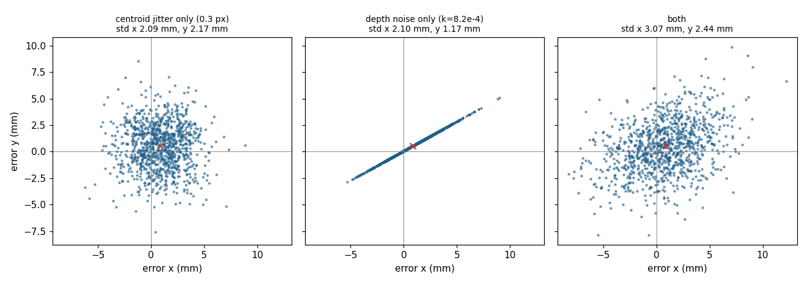

الدرس C1 · الطبقة 1: الحدس
الجزء C: عيوب المستشعر. أولاً: الـ noise
انتقلنا إلى الجزء C. حتى الآن كانت كاميرتنا مثالية (خطأ 1.2 إلى 1.8 مم فقط). الكاميرا الحقيقية ليست كذلك، فنضيف إليها عيوباً تدريجياً، ونبدأ بالأبسط: الـ noise، أي الخطأ العشوائي في كل قياس. جواب السؤال السابق: انتقلنا إلى C كما اقترحتُ.
مصدران للخطأ العشوائي
- اهتزاز المركز (centroid jitter): مكان الكرة في الصورة يرتجف جزءاً من البكسل من إطار لآخر (كأن اليد تهتز قليلاً). عندنا 0.3 px على كل محور، أي 0.3 × 7.22 = 2.2 mm على الأرض.
- خطأ العمق (depth noise): قراءة العمق نفسها ترتجف، والارتجاف يكبر مع مربع المسافة: σZ = 8.2×10-4 × Z2. عند 3 م يساوي 7.4 مم، وعند 1.5 م يساوي 1.8 مم فقط.
القيمتان مؤقتتان اخترتُهما (الأولى تخمين، والثانية مشتقة من ورقة Chatterjee عن كاميرات العمق، سنراها لاحقاً).
كيف يبدو الخطأ؟ (تجربة حقيقية)
وضعتُ الكرة ساكنة عند (0.9, 0.5) وأخذتُ 1000 قياس بكل نوع من الـ noise. كل نقطة هي قياس واحد، ومحاور الرسم هي الخطأ عن المكان الحقيقي بالملّيمتر:

- اهتزاز المركز فقط: سحابة دائرية. الانحراف المعياري 2.1 mm على كل محور.
- خطأ العمق فقط: خط مستقيم. الانحراف 2.1 mm على x و1.2 mm على y.
- الاثنان معاً: سحابة بيضاوية. 3.1 mm على x و2.4 mm على y.
(الإشارة الحمراء × هي القياس المثالي، أي بلا noise: يبعد 0.86 و0.56 مم عن الحقيقة، وهذا خطأ ثابت وليس عشوائياً.)
لماذا خطأ العمق خط مستقيم؟
لأن العمق يدخل في الصيغة x = (u − cx) Zc / f وy = −(v − cy) Zc / f. خطأ في Zc يضرب الاثنين بالنسبة نفسها، فيتحرك المكان على الخط الواصل بين مركز الصورة والكرة. ويكون الخطأ (x / Zc) × δZ: عند مركز الصورة (x = 0) لا أثر له، وعند الأطراف يكبر. هنا 0.9/2.97 × 7.4 = 2.2 mm على x، وهذا ما رأيناه.
سؤال للتأكد
لو وُضعت الكرة تماماً تحت الكاميرا (x = y = 0) فهل يؤثر خطأ العمق على قياس المكان؟ ولماذا؟
القادم: C1 الطبقة 2 (التعريفات الدقيقة: التوزيع الطبيعي والانحراف المعياري).